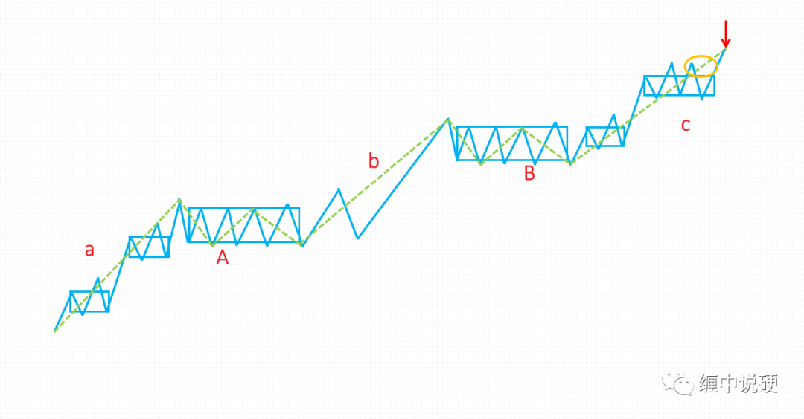
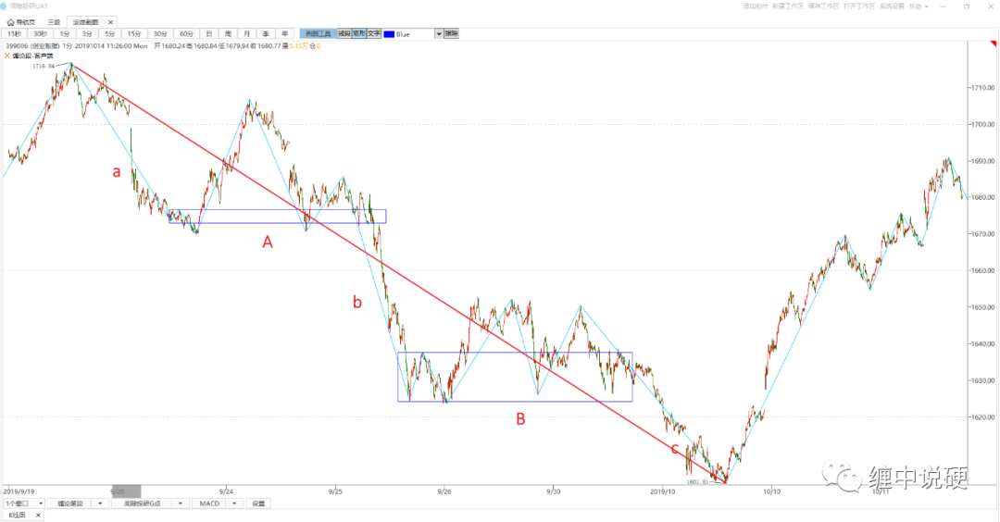
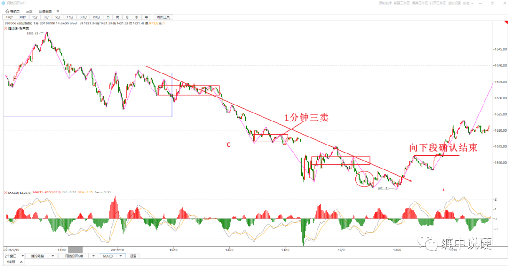
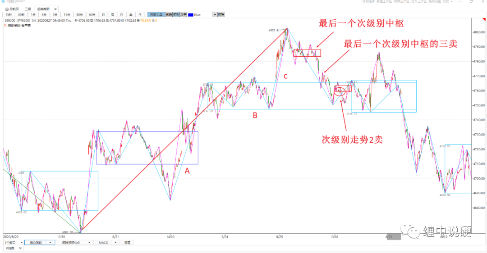

同级别视角下，如何量化趋势背驰与小转大
趋势背驰的定义：

1：有2个以上同级别中枢，且中枢与中枢之间无任何触碰；
2：以上图为例，围绕最后一个中枢的bc走势，其中c的上涨力度小于b；
3：c的级别必然是次级别；
4：以上图为例，c必然是趋势，且包含了最后一个中枢B的第三类买点。
1，同级别视角下如何量化趋势背驰：


1：已知1分钟段的走势类型为本级别走势类型；
2：已知1分钟笔的走势类型为次级别走势类型。
求解：走势F=a+A+b+B+c什么时候确认结束。
解：
1：走势F为趋势；
2：根据公式计算macd面积，c的面积小于b，即c与b盘背；
3：c的内部结构为笔趋势，即次级别趋势；
4：c是次级别趋势，且包含了最后一个中枢B的三卖。
根据1-4条，向下1分钟线段结束，即确认1分钟趋势背驰，此时向下走势F结束。
小转大的定义：
1：最后一个次级别走势出现第三类买卖点，此为必要条件；
2：小转大中没有本级别第一类买卖点，第二类买卖点为最佳位置。
2，同级别视角下如何量化趋势中的小转大：

1：已知1分钟段的走势类型为本级别走势类型；
2：已知1分钟笔的走势类型为次级别走势类型。
求解：走势F=a+A+b+B+c什么时候确认结束。
解：
定义：1分钟段确认结束，内部符合要求即确认次级别第一类买卖点。
1：走势F为趋势；
2：c显然不符合趋势背驰定义；
3：最后一个走势的中枢出现第三类卖点；
4：最近的一个段结束，且内部有上涨中枢，此时确认该段结束，即确认次级别第一类卖点。
根据1-4，确认走势F没有本级别第一类卖点，但通过小转大的判断，用第二类卖点确认了本级别走势的结束。